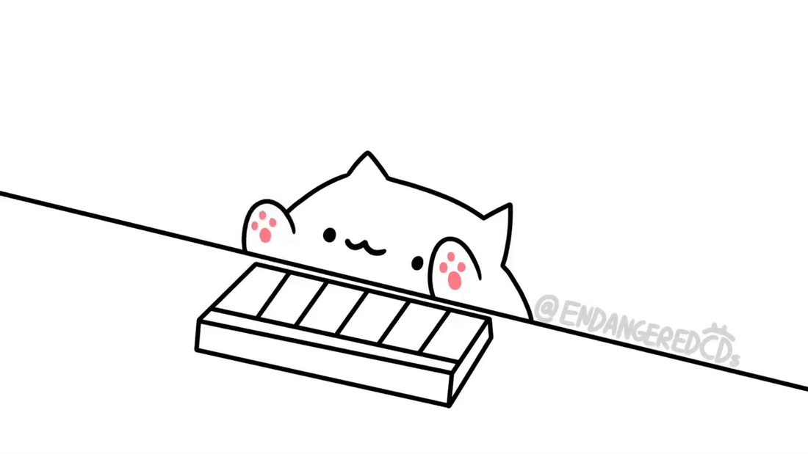

<!DOCTYPE html>
<html lang="en" dir="ltr">
	<head>
		<meta charset="utf-8">
		<title>BongoPlayer</title>
		<script type="text/javascript" src="jquery-3.3.1.min.js"></script>
		<script type="text/javascript" src="StartAudioContext.js"></script>
		<script type="text/javascript" src="Tone.min.js"></script>
		<style media="screen">
			#bongoCatImageContainer {
				text-align: center;
			}

			#bongoCatImageContainer img {
				width: 250px;
			}
		</style>
	</head>
	<body>
		<div id="bongoCatImageContainer"></div>
		<script type="text/javascript">
		// python -m http.server
		var pianoFolder = 'insts/piano/'
		var songJSON = ''
		var $bongoCatImageContainer = $('#bongoCatImageContainer')

		var piano = new Tone.Sampler({
			'C1': pianoFolder + 'C1.mp3',
			'C2': pianoFolder + 'C2.mp3',
			'C3': pianoFolder + 'C3.mp3',
			'C4': pianoFolder + 'C4.mp3',
			'C5': pianoFolder + 'C5.mp3',
			'C6': pianoFolder + 'C6.mp3',
			'C7': pianoFolder + 'C7.mp3'
		}).toMaster();

		$(document).ready(function() {
			$.ajax({
				dataType: 'json',
				url: 'songs/BTS-BST.json',
				async: false // Need to fix
			}).done(function(data) {
				songJSON = data;
				$.each(songJSON.tracks, function(trackIndex, track) {

					if(track.instrumentFamily == 'drums') {
						return true;
					}

					$bongoCatImageContainer.append('')

					var part = new Tone.Part(function(time, note){
						piano.triggerAttackRelease(note.name, note.duration, time, note.velocity);

						Tone.Draw.schedule(function() {
							$('#bongoCat' + trackIndex).attr('src', 'uu.png')
							setTimeout(function() {
								$('#bongoCat' + trackIndex).attr('src', 'ud.png')
							}, 100)
						}, time);
					}, track.notes).start(0)
				});

				Tone.Transport.start('+0.1')
			})

			StartAudioContext(Tone.context, '#start').then(function() {
			})
		});
	</script>
	</body>
</html>
